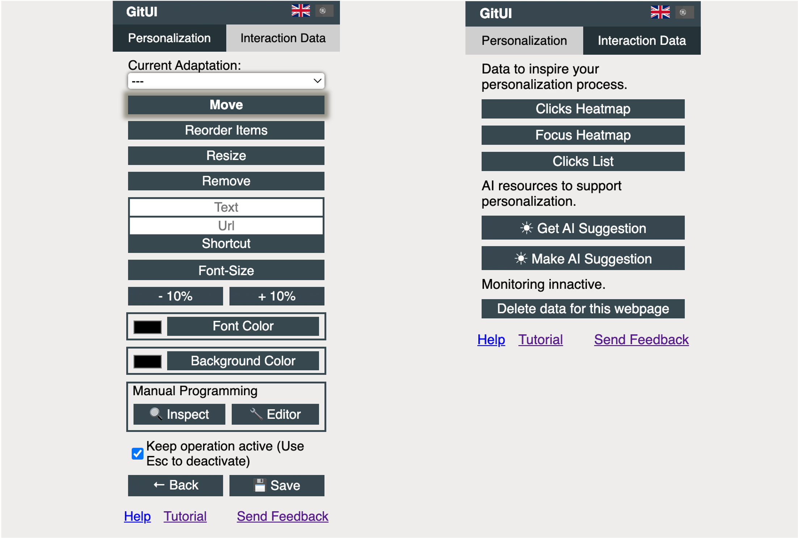
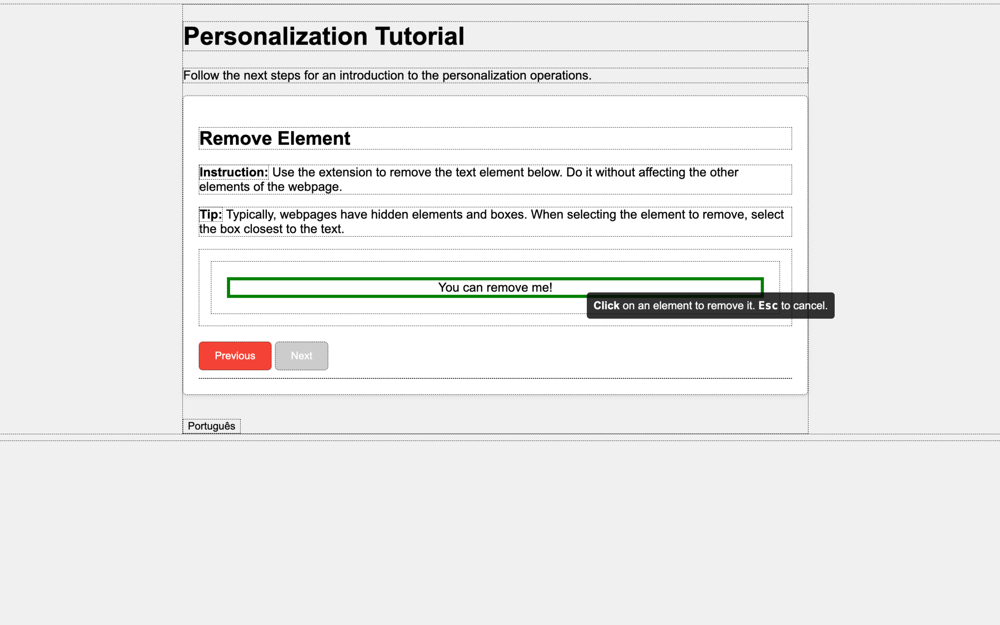

Are you tired of the same old websites? Want to make them your own? GitUI allows you to adjust colors, move elements, and even track your clicks to inspire your next custom design. It's time to take control of your web experience!


Start personalizing your favorite websites today. It's simple, fun, and boosts your productivity!
Get GitUI on Chrome Web Store